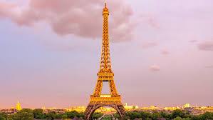
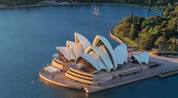
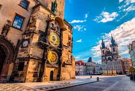

Destinos Turísticos Imperdibles
Descubre los encantos de París, Roma y Barcelona en un solo viaje inolvidable.
Explora los templos de Kyoto, las playas de Bali y la bulliciosa Tokio.

Viajar expande la mente y nos conecta con culturas diversas alrededor del mundo.
La gastronomía local es una de las mejores formas de experimentar auténticamente un destino.
Los viajes sostenibles son el futuro del turismo responsable.


